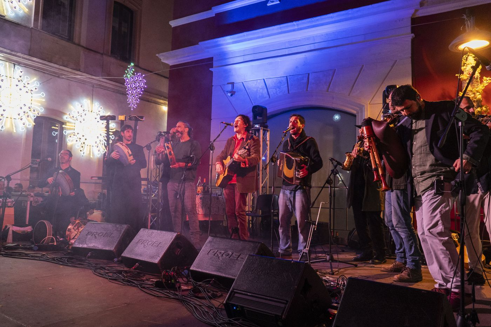
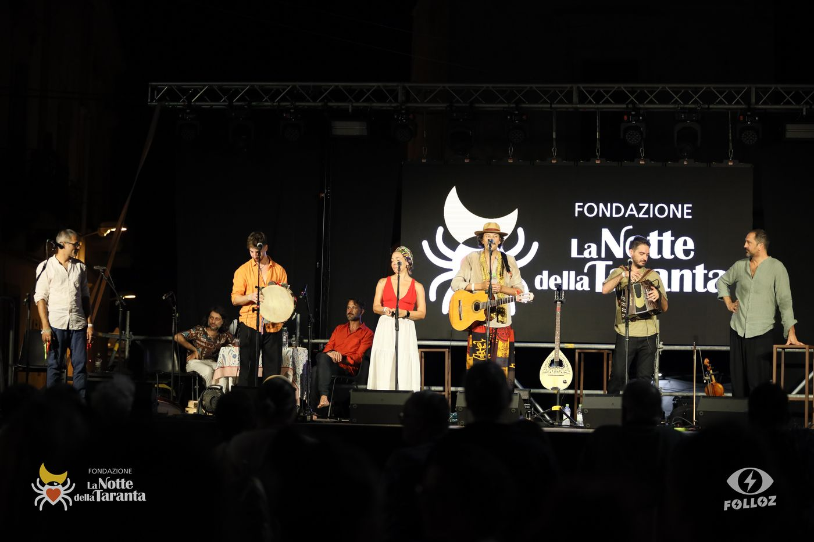

Niuri Te Sule portano in scena "25 anni di Canti e Incanti della Taranta", un racconto in chiave musicale della strada fatta fin qui.
Niuri Te Sule bring to the stage "25 years of Canti e Incanti della Taranta", a musical storytelling of their journey so far.
Un percorso che resta fedele con devozione ai suoni incontaminati e più antichi della tradizione musicale salentina. Dalle melodie d'amore (tra tutte "Beddha ci dormi") si passa ai canti di lavoro ("Fimmene Fimmene", "La Tabaccara") che rimandano a tempi lontani, quando le donne cantavano all'unisono con le cicale nei campi e gli uomini sapevano regalare nenie e serenate.
A path that remains devoted to the purest and most ancient sounds of the Salentine musical tradition. From love melodies (above all "Beddha ci dormi") to work songs ("Fimmene Fimmene", "La Tabaccara") that evoke distant times, when women sang in unison with the cicadas in the fields and men knew how to offer lullabies and serenades.
La protagonista assoluta resta la pizzica-pizzica, riproposta attraverso l'uso esclusivo di strumenti popolari e nel rispetto di quel ritmo ancestrale che smuove ogni tipo di pubblico e lo proietta dentro una danza sfrenata e incontrollata.
The undisputed protagonist remains the pizzica-pizzica, reproposed through the exclusive use of folk instruments and in respect for that ancestral rhythm that stirs every kind of audience and projects them into a wild and uncontrolled dance.
Il battere incessante dei tamburi si fonde con le linee melodiche di due violini, organetto diatonico ed armonica a bocca, creando un magma sonoro caldo che arriva dritto a chi lo ascolta. A completare la ricerca dei suoni più tipici della tradizione, si aggiungono mandola, mandolino, bouzouki, zampogna, flauti doppi, ciaramella, clarinetto, così creando un tappeto sonoro su cui naturalmente si adagiano quattro voci intrecciate con cura e naturalezza.
The incessant beating of drums merges with the melodic lines of two violins, diatonic accordion and harmonica, creating a warm sonic magma that reaches directly to the listener. To complete the search for the most typical sounds of the tradition, many other instruments are added: mandola, mandolin, bouzouki, zampogna, double flutes, ciaramella, clarinet — creating a sonic carpet upon which four voices naturally lie, interwoven with care and naturalness.
Nel corso dello spettacolo ci sono anche passaggi teatrali, di danza e di cantastorie per rimandare al sapore più intimo della terra e dei mari che abbracciano il Salento. Sul palco si avvicendano, per oltre due ore, numerosi polistrumentisti che in questi anni avevano già fatto parte del progetto e che oggi si sono riuniti sotto forma di vero e proprio collettivo musicale.
During the show there are also theatrical passages, dance and storytelling to evoke the most intimate flavour of the land and seas that embrace the Salento. On stage, for over two hours, many multi-instrumentalists take turns — musicians who had already been part of the project over the years and who today have reunited as a true musical collective.

Il progetto musicale Niuri Te Sule festeggia quest'anno 25 anni di attività.
Da quel lontano 2000, quando in quel di Siena alcuni studenti universitari salentini — Demis Lofari e Giovanni Trono — decisero, insieme al toscano Giorgio Doveri, di rendersi protagonisti nella riproposta dei canti tradizionali della propria terra di origine.
Quel Salento che proprio in quegli anni viveva il rifiorire di suoni lontani che si credevano ormai perduti e che invece rimangono, ancora oggi, un punto fermo nel panorama della musica popolare.
In questi 25 anni tanti sono stati i concerti in lungo e largo per tutta Italia ma anche all'estero, eppure la musica dei Niuri Te Sule ha mantenuto il sapore più tradizionale. Diverse le collaborazioni discografiche (Sony, Redland, Swithmuse) e le partecipazioni in trasmissioni televisive e Festival nazionali ed internazionali.
Nel corso degli anni si sono alternati tanti musicisti che oggi restano protagonisti della scena musicale popolare salentina. Ad oggi il progetto si è strutturato in forma di collettivo, con numerosi polistrumentisti pronti ad avvicendarsi senza mai snaturare il ritmo e quei suoni antichi che costituiscono l'essenza più intima della formazione.
Nella scorsa estate sono stati tra i protagonisti del Festival itinerante della Notte della Taranta.
The Niuri Te Sule musical project celebrates 25 years of activity this year.
Since the distant year 2000, when in Siena some Salentine university students — Demis Lofari and Giovanni Trono — decided, together with the Tuscan Giorgio Doveri, to become protagonists in the revival of traditional songs from their homeland.
That Salento which, in those very years, was experiencing the reblooming of distant sounds thought to be lost, and which instead remain, even today, a fixed point in the landscape of popular music.
Over these 25 years there have been many concerts throughout Italy and abroad, yet the music of Niuri Te Sule has maintained its most traditional flavour. Several discographic collaborations (Sony, Redland, Swithmuse) and participations in television programmes and national and international festivals.
Over the years, many musicians have taken turns, who today remain protagonists of the Salentine popular music scene. Today the project has been structured as a collective, with numerous multi-instrumentalists ready to alternate without ever distorting the rhythm and those ancient sounds that constitute the most intimate essence of the formation.
Last summer they were among the protagonists of the La Notte della Taranta itinerant festival.

Guarda il video
Watch the video


| Nome | Niuri Te Sule |
| Sottotitolo | Canti e Incanti della Taranta |
| Genere | Pizzica · Musica popolare salentina · Etno-musicale |
| Durata | Oltre due ore |
| Formazione |
Demis Lofari – Voce, chitarra classica, bouzouki, armonica, clarinetto, tamburi Giorgio Doveri – Violino, mandola, mandolino Giuseppe Delle Donne – Tamburelli, percussioni, cucchiai, voce Tommaso Massarelli – Organetto, tamburelli, voce Carlo Massarelli – Flauti, ciaramella, zampogna, cornamusa, chalumeau, armonica a bocca, organetto, tamburelli, voce Valentina Di Bello – Voce Riccardo Cortese – Tamburelli, percussioni Marco Ghezzo – Violino, mandolino Giuseppe “Peppino” Leone – Tamburelli, percussioni Emanuele Flandoli – Fonico, audio fx |
| Collaborazioni | Giovanni Trono · Giuseppe Campa · Emanuele Raganato · Carmelo Nascosto · Sara Colonna · Leonardo Ciccarese |
| Discografia | Sony · Redland · Swithmuse |
| Fondazione | 2000 – Siena |
mob. +39 338 1976447 Demis Lofari
Instagram: @niuritesule
YouTube: youtube.com/@NiuriTeSule
| Name | Niuri Te Sule |
| Subtitle | Songs and Spells of the Taranta |
| Genre | Pizzica · Salentine Folk Music · Ethno-musical |
| Duration | Over two hours |
| Members |
Demis Lofari – Voice, classical guitar, bouzouki, harmonica, clarinet, drums Giorgio Doveri – Violin, mandola, mandolin Giuseppe Delle Donne – Tambourines, percussion, spoons, voice Tommaso Massarelli – Diatonic accordion, tambourines, voice Carlo Massarelli – Flutes, ciaramella, zampogna, bagpipe, chalumeau, harmonica, diatonic accordion, tambourines, voice Valentina Di Bello – Voice Riccardo Cortese – Tambourines, percussion Marco Ghezzo – Violin, mandolin Giuseppe “Peppino” Leone – Tambourines, percussion Emanuele Flandoli – Sound engineer, audio fx |
| Collaborators | Giovanni Trono · Giuseppe Campa · Emanuele Raganato · Carmelo Nascosto · Sara Colonna · Leonardo Ciccarese |
| Discography | Sony · Redland · Swithmuse |
| Founded | 2000 – Siena |
mob. +39 338 1976447 Demis Lofari
Instagram: @niuritesule
YouTube: youtube.com/@NiuriTeSule